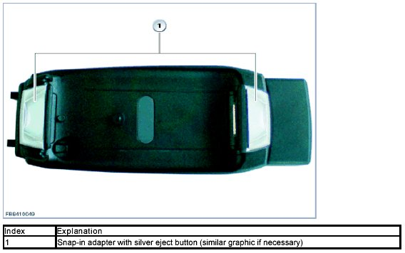
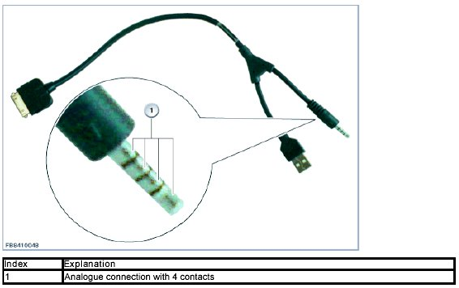
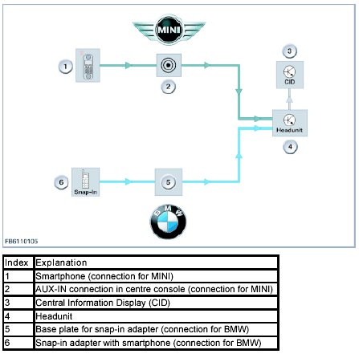

Video Connection For Smartphone
Video Connection For Smartphone
Video connection for smartphone
This functional description must be used for BMW and MINI vehicles. The function is identical for both brands. Only the smartphone connection is different. The video connection for the BMW is integrated in the base plate and must be connected with the smartphone via a corresponding snap-in adapter. For the MINI the smartphone is connected via a special MINI Y-cable to the USB and AUX-IN connection in the centre console.
The following terminal devices are currently supported:
1. Apple(TM) iPhone
2. Apple(TM) iPod Touch
A detailed list of the supported devices is available on the Internet at www.bmw.com/connectivity or www.mini.com/connectivity.
Smartphone connection
The following options are available for connecting a smartphone:
- via snap-in adapter (BMW only)
- via MINI Y-cable (MINI only)
Snap-in adapter (BMW)
The snap-in adapter is inserted on the telephone base plate. The smartphone is inserted in the snap-in adapter. A USB connection to the vehicle is then set up automatically.
The respective snap-in adapter for BMW vehicles can be found in the Electronic Parts Catalogue (EPC). A snap-in adapter which supports the video function can be detected on the silver eject button (see graphic).

MINI Y-cable (MINI)
The MINI Y-cable has a connection for the Apple terminal device and a USB port and a 4-pin analog jack plug.
The data exchange and the audio signals are transmitted via the USB port. The video signal is output analogously via the jack plug. From production date 03/11 the stereo-audio signal is also transmitted analogously via the jack plug.
The MINI Y-cable is included in the vehicle delivery specification if the vehicle has the corresponding optional equipment (SA6NM). The cable can also be purchased via the Electronic Parts Catalogue (EPC).
NOTE: The video function is system-related and is not available for the MINI via a snap-in adapter.

System functions
With the video connection function for the smartphone it is possible to play video files (films, TV programmes, podcasts, etc.) saved on the smartphone on the central information display (CID) in the vehicle. The image display is only available when the vehicle is stationary for safety reasons. The image data is transmitted analogously via the CVBS line (Colour Video Blanking Signal) to the headunit.

As soon as the smartphone is connected with the vehicle, it appears as an external device in the CD/Multimedia menu on the CID. The videos available on the smartphone can be selected via the controller/MINI joystick. By selecting a video the smartphone is requested by the headunit to play via the USB. The smartphone issues the image data to the CVBS line via its video output. The headunit receives this image data and processes it accordingly so it can be displayed on the CID.
Notes for Service department
General notes
Proceed as follows to play a video in the vehicle:
- Connect the smartphone to the vehicle.
- Switch on the radio and adjust to an audible volume.
- In the vehicle switch to the multimedia menu. (CD/Multimedia - External devices)
- Select external device. The external device is displayed by the name of the smartphone.
- Select the Video menu item.
- Start the respective video by selecting from the list.
Diagnosis instructions
A video cannot be played
It is possible that the audio playback of a selected video can be heard but no image is displayed. In this case the audio playback is effected via a USB but the video image is not transmitted analogously on the CVBS line. The following preconditions must be checked here:
- Use the correct MINI Y-cable and check connections. Check the part number in the EPC. Check connection at vehicle.
- Use approved snap-in adapter and check connections. Compare the part number in the EPC. Check the connection at the telephone base plate in the vehicle.
- Switch on the radio and adjust to an audible volume.
- If the music player functions (display of music tracks and playlists, MP3audio playback) can be operated in the vehicle, then the USB connection in the vehicle is correct. In this case focus troubleshooting on the video input.
- Check the line and plug connections between AUX-IN connection (MINI) or base plate with snap-in adapter (BMW) and the headunit.
The following procedures are available via the diagnosis system for a check:
Path: Function structure - 03 Body - Audio, Video, Telephone, Navigation - Telecommunication - System check
or
Path: Function structure - 03 Body - Audio, Video, Telephone, Navigation - Video system
We can assume no liability for printing errors or inaccuracies in this document and reserve the right to introduce technical modifications at any time.